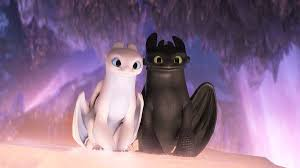

ინფორმაცია:მოვითვინიეროთ დრაკონი“ (ინგლ. How to Train Your Dragon) — 2010 წლის კომპიუტერული ანიმაციური კომედიური ფილმი,
რომლის რეჟისორები არიან კრის სანდერსი და დენი დებლუა, სცენარისტები — უილიამ დიევისი,
დენი დებლუა და კრის სანდერსი, პროდიუსერი — ბონი არნოლდი. მუსიკა ეკუთვნის ჯონ პაუელს.
პერსონაჟებს ახმოვანებენ ჯეი ბარუშელი, ჯერარდ ბატლერი და კრეიგ ფერგიუსონი.
ფილმი აწარმოა DreamWorks Animation-მა, ხოლო დისტრიბუცია გაუწია Paramount Pictures-მა.
ფილმში მოთხრობილია ბიჭისა და დრაკონის მეგობრობის შესახებ, რომელთა წყალობითაც მოსისხლე მტრებმა —
ვიკინგებმა და დრაკონებმა საერთო ენა გამონახეს და დამეგობრდნენ.
ჟანრი:სათავგადასავლო, კომედია, დრამა, საოჯახო, ფენტეზი
ქვეყანა: აშშ, ინგლისი
რეჟისორი: დინ დეფლოისი
მსოფლიო პრემიერა: 12 ივნისი
რეჟისორი: დიან დებლოისი
მსახიობები: ჯულიან დენისონი, გაბრიელ ჰოველი, ბროუინ ჯეიმსი,
ჰარი ტრევალდვინი, ჯერარდ ბატლერი, ნიკო პარკერი,
ნიკ ფროსტი, რუთ ცოტუ, მეისონ თეიმსი.
